iOS 26: Beyond Liquid Glass
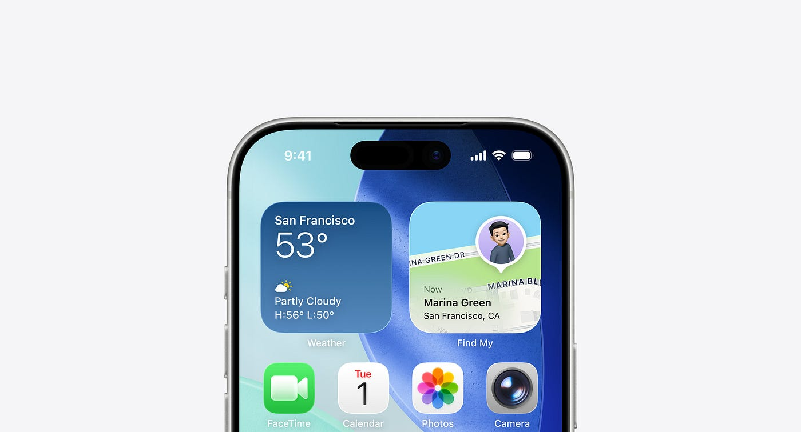
So, let’s talk about iOS 26. Of course, it’s “just another iOS update” — one that shows up every year like clockwork. But this time, it feels a little different. There’s been a lot of noise around the new Liquid Glass material. The centerpiece of iOS 26’s design refresh. And while most of the conversation has stayed around its shiny new aesthetic, I believe there’s more to it than what meets the eye.
I’ve been using iOS 26 for a while now, and as a product designer, I can’t help but look beyond its visual novelty. Because every aesthetic shift in Apple’s ecosystem isn’t just a visual story, it’s a usability statement. Let’s unpack what’s really happening beneath the surface. Not just from a visual design perspective, but from an experience design and product design one.
The Liquid Glass effect
The invention (or rather, the introduction) of Liquid Glass has clearly pushed Apple’s design team to explore it across the system. The new material isn’t just a skin, it’s a catalyst that has led to subtle but meaningful new interface patterns.
Interestingly, many of these patterns could have existed even without Liquid Glass. But this material gave Apple the perfect reason to showcase something new. To push the interface into feeling fresh again.
And that’s where things get interesting. Because when design decisions are born from the desire to showcase a material, they often reveal how far a team is willing to stretch the balance between form and function.
Floating navigation
One of the most noticeable changes is in how the bottom navigation behaves across native apps.
For years, we’ve gotten used to the standard edge-to-edge bottom navigation bar — predictable, anchored, and fixed. But in iOS 26, it now “floats.” It’s rounded, padded from all edges, and lifted ever so slightly from the bottom of the screen.
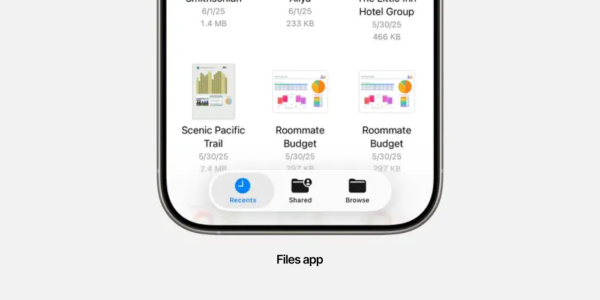
This change doesn’t alter the functionality of navigation. It still does what it’s meant to do. But visually, it communicates something new. It feels more approachable, more tactile, almost as if the UI is saying, “Touch me, I’m alive.”
What’s clever is how Apple managed to evolve the emotional tone of navigation without changing its fundamental usability. That’s design maturity: evolution, not disruption.
Primary action reimagined
Another fascinating shift is how iOS 26 separates one primary action from the rest of the navigation. This is something we’ve seen in many Android and web patterns before with floating action buttons (FABs).
Depending on the app, this could be Search, New Message, New Note, or something contextually primary. This new button sits slightly detached, to the right of the bottom navigation, almost like a merge between the classic bottom nav and a floating action button.
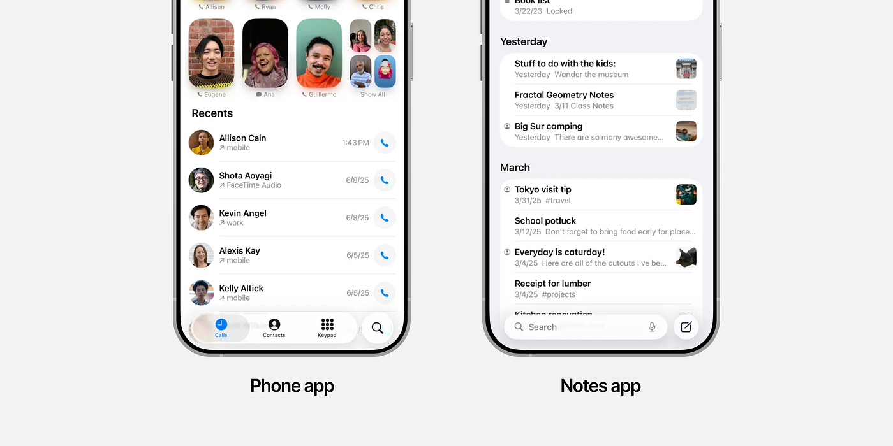
It’s a tiny design choice, but a big usability statement. It tells the user, “This is important.” And Apple’s execution keeps it visually harmonious. You still recognize the navigation as one cohesive unit. The separation is functional, not chaotic.
In short, it’s Apple taking an idea we’ve all seen before — and polishing it into something unmistakably Apple.
Repositioning actions
To accommodate this new bottom navigation model, some icons and actions have shifted positions. Actions that once lived in the top bar — like “New Message” in Messages — now sit near the bottom.
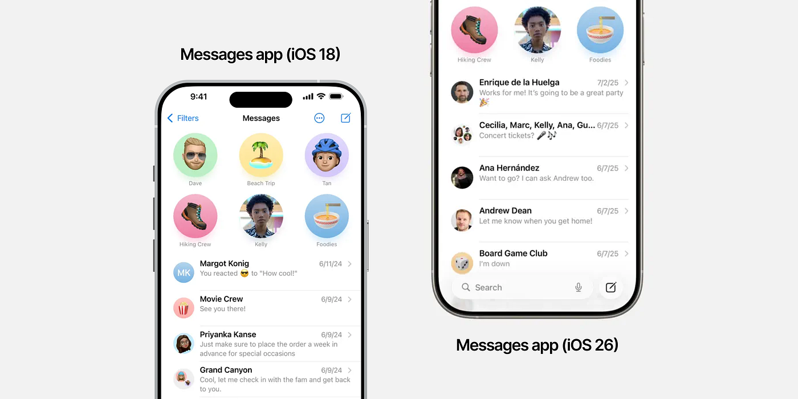
At first glance, this could seem a bit off. But surprisingly, it doesn’t feel disorienting. After a few days of use, I found that my mental model had already adapted.
This is a subtle example of what happens when visual balance and usability intersect. The structure of the interface may have changed, but the logic behind it still holds. And that’s a testament to good design: when your brain adapts before your eyes even notice.
Search comes down
One of the biggest shifts in iOS 26 is the relocation of search. It is now consistently positioned at the bottom across most apps.
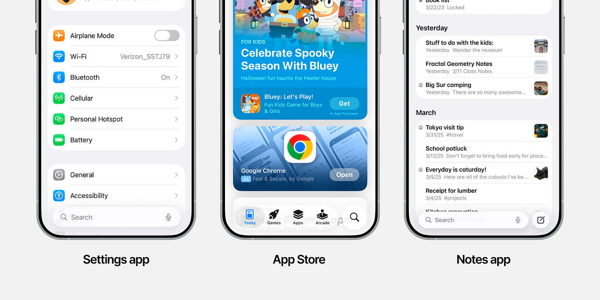
This move makes perfect sense. As screens grow taller, our thumbs don’t. We’ve seen Samsung tackle this years ago with One UI by prioritizing touchable zones near the bottom half of the screen.
Apple, true to its style, took its time. They quietly introduced bottom search behavior in Spotlight over recent years. iOS 26 is simply the final, confident step in that direction.
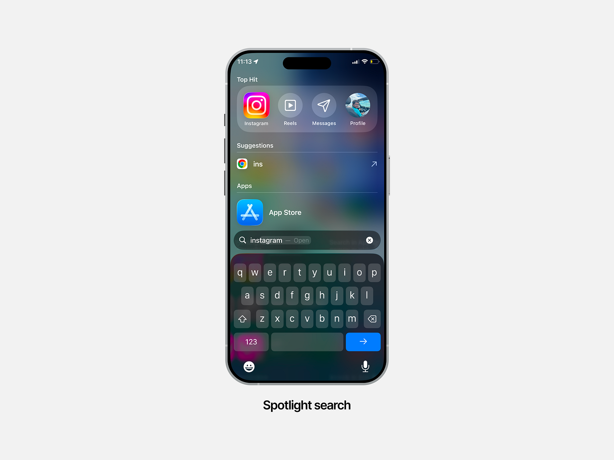
Now, the search bar appears right above the keyboard, sticking to it as you type. Results appear from the top, maintaining a sense of vertical hierarchy while still feeling comfortable to reach. It’s thoughtful, ergonomic, and surprisingly overdue.
As someone who’s written about designing for large screens before, I’m glad to finally see this evolution happen system-wide.
Feel free to check out my 2021 article on designing apps for big smartphones.
The disappearing home indicator
This one caught me off guard. The familiar horizontal home indicator — that small gesture bar we’ve had since the iPhone X — now fades away after a few seconds inside apps.
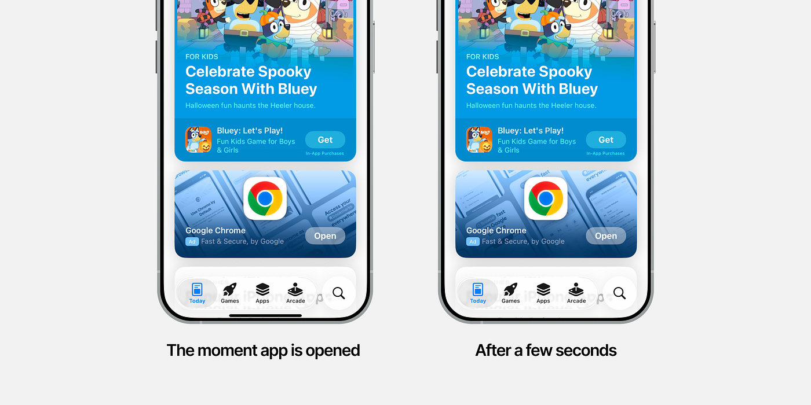
At first, I thought it was a bug. But it isn’t. It’s intentional.
Apple seems to be betting on our muscle memory. After all these years, users no longer need to see the bar to know how to navigate. Hiding it declutters the interface, bringing focus back to the app’s content.
But on a deeper level, I think this is Apple’s quiet way of preparing us for the future. For a world like Vision Pro, where navigation is no longer seen but felt.
Get Shaunak Bhanarkar’s stories in your inbox
Join Medium for free to get updates from this writer.
It’s a small change, but symbolically, it’s huge. It’s Apple saying, “You know what to do now. You’ve evolved.”
Motion and fluidity
For years, iOS has played it safe with motion. Smooth, predictable, maybe even a little too restrained.
With iOS 26, motion finally feels alive again. Transitions ripple through the interface like currents under glass. Everything moves with a sense of fluid tension — not exaggerated, but deliberate.
This is where the Liquid Glass material truly shines: in motion. Apple seems to have gone deep into understanding how this material should behave — how light bends, how surfaces distort, how blur interacts with motion. The result is tactile, almost cinematic.
It’s the kind of motion that doesn’t shout for attention, it earns it.
Sorry, I had a screen recording of specific examples of motion from iOS 26 but Medium doesn’t allow me to insert videos!
The visual story of Liquid Glass
Now let’s talk about the aesthetic itself.
Personally, I love it. The visual depth of Liquid Glass is captivating. Translucent, organic, and unapologetically futuristic. It feels like Apple finally found a new visual language after years of flat minimalism.
That said, not everything is perfect. Readability and accessibility are still valid concerns. The early beta versions had terrible contrast — thankfully, the public release is significantly better. Apple’s high-contrast toggle is a nice touch, though it does dampen the beauty of the glass a bit. Still, that’s a tradeoff worth making for some people.
But here’s the tricky part. Liquid Glass relies heavily on what’s behind it. The material looks great on Apple’s carefully chosen default wallpapers, but not so much on random user wallpapers.
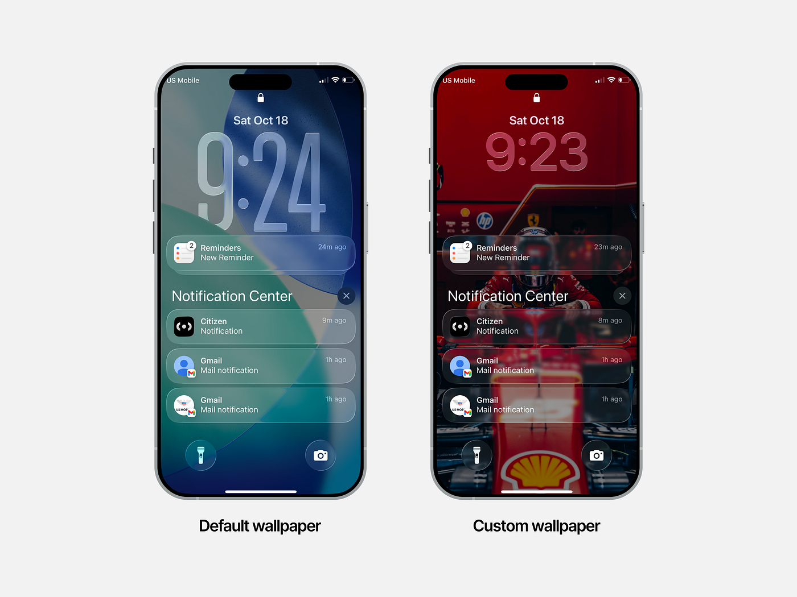
If your background doesn’t complement it, the glass loses its charm. And sometimes, its readability. I’d love to see Apple explore adaptive transparency or dynamic contrast that adjusts based on the underlying wallpaper. It’s technically complex, but it would make this material truly universal.
In addition, since the visuals of Liquid Glass strongly rely on the background, it really stands out with imagery in the background. However, almost all the apps have a plain background, which limits the ability of Liquid Glass to really make a lasting visual impact within apps.
When beauty overreaches
In a few places, Liquid Glass feels slightly forced.
Elements like back arrows or close icons, which are functionally minor, suddenly command too much visual weight. These are cases where aesthetics start to nudge usability, however slightly.
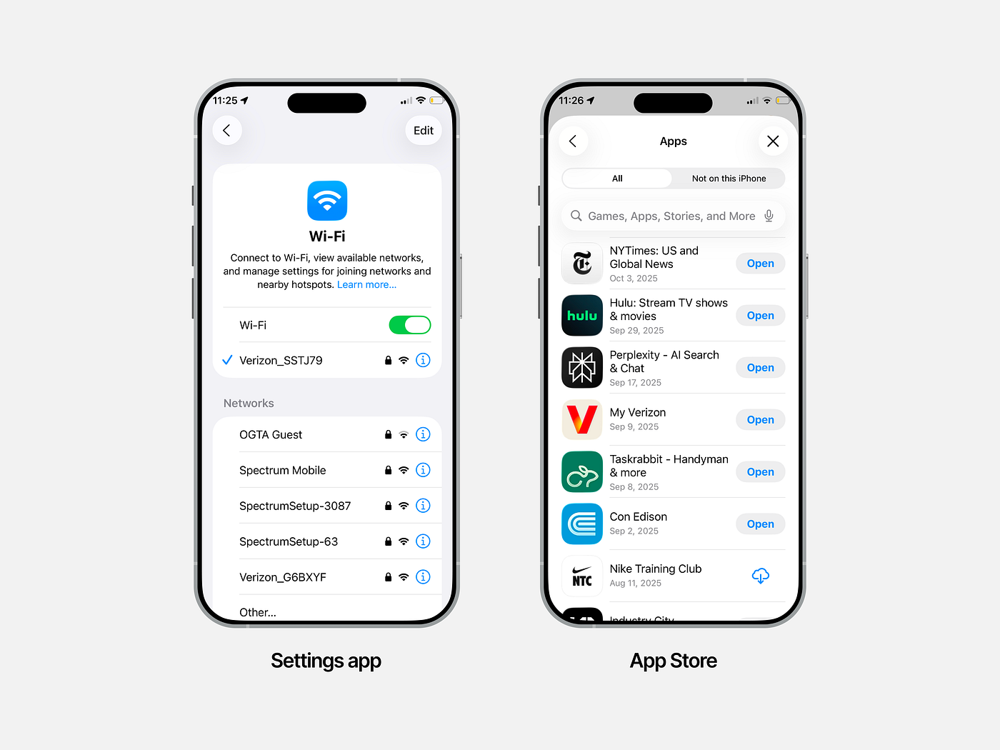
The same goes for elevation logic. In iOS 26, search bars and icon buttons both use the same elevated glass treatment. It blurs the line between interactive control and input field, which can feel visually inconsistent. It’s not a dealbreaker, but it’s worth thinking about.
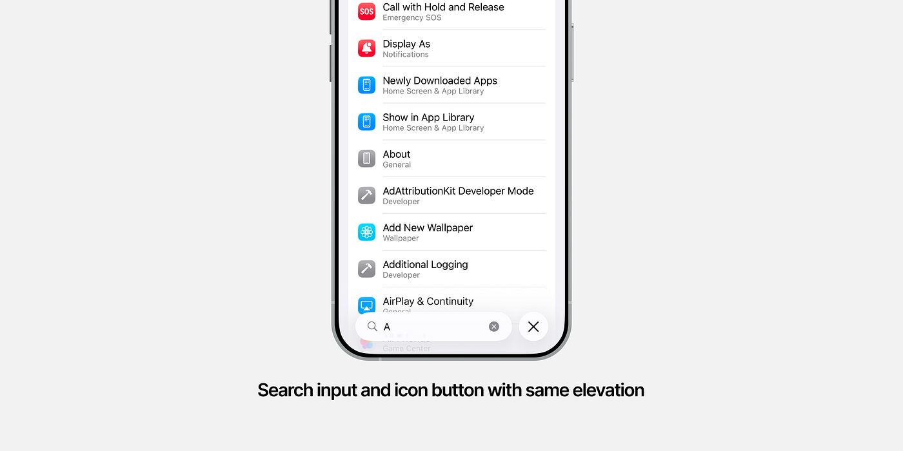
These small nuances remind us that even the most polished design systems are never truly finished. They’re always in motion, just like the products they serve.
Slight inconsistencies
Despite the polish, iOS 26 isn’t entirely consistent.
The search behavior, for example, differs across apps. Calendar app shows search icon at the top and opens the search bar at the top. Wallet app shows the search icon at the top and opens the search bar at the bottom. And most other apps show the search icon at the bottom and open the search bar at the bottom.
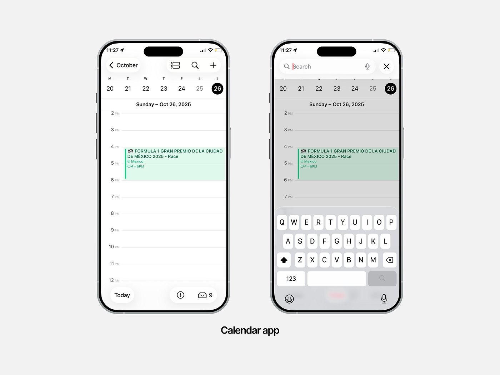
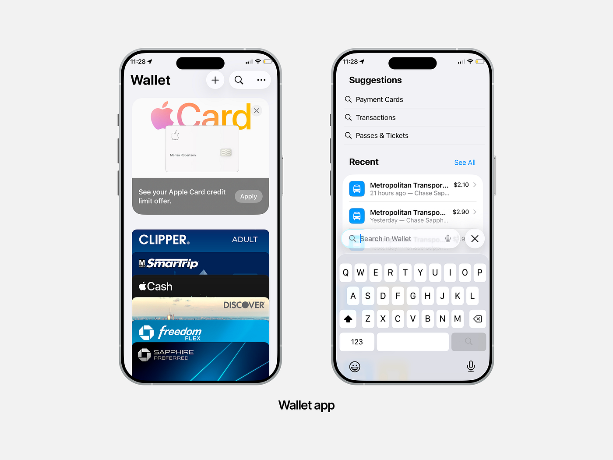
Similarly, most apps now use a “close” icon for exiting search, but the App Library still uses a “Cancel” text button.
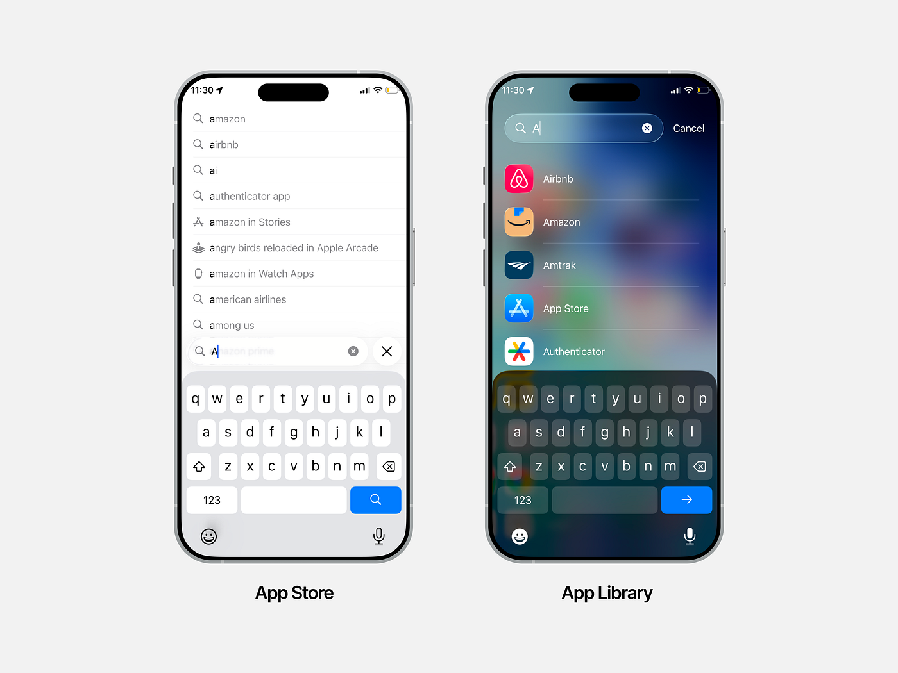
These may sound like small details, but details are where ecosystems either stay coherent or start to fragment. And Apple has always been a company that sweats the small stuff. So I hope these inconsistencies get ironed out over time.
Light, dark, and the nature of glass
Interestingly, Liquid Glass looks different in light mode versus dark mode.
In light mode, it blends in, sometimes a bit too much. That’s not necessarily bad, it’s just a reminder that materials, like colors, behave differently under different lighting systems.
In dark mode, it’s far more visible. Probably because the frosted blur uses a white base tint. It glows more. It stands out. It feels more “liquid.”
And that, in itself, is part of the learning curve of designing with living materials.
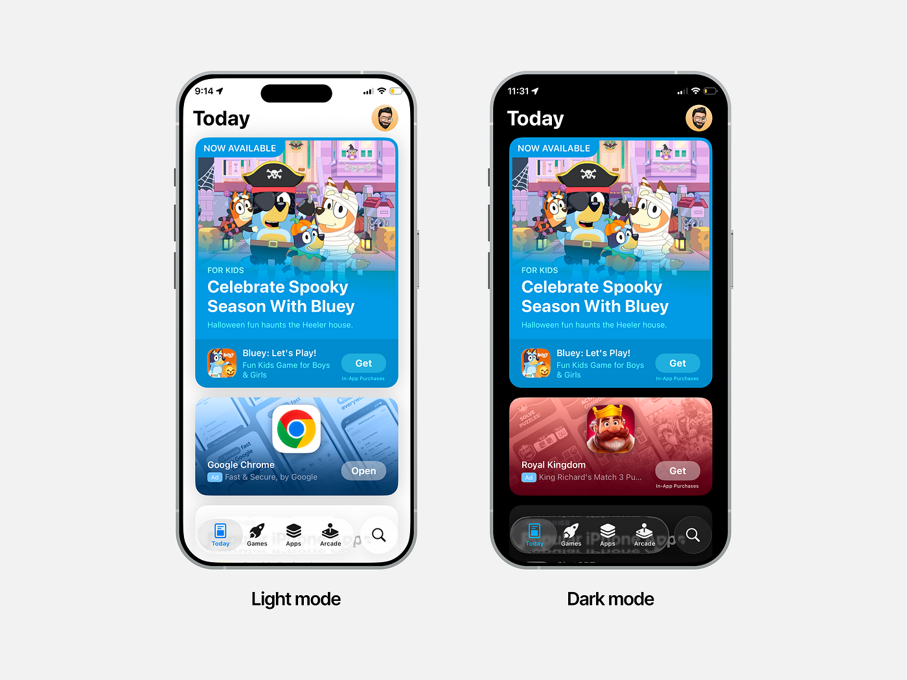
Final thoughts: The experience beneath the aesthetic
While most of the internet’s attention around iOS 26 has been about the new material (and rightfully so), I think the real story lies in how that material has influenced product and experience design.
Liquid Glass is more than a surface. It’s a shift in how the interface feels. Light, floating, breathable. It’s Apple once again reminding us that design isn’t just about how something looks, but about how it behaves and responds.
Personally, I’m loving iOS 26. Not because it’s radically different, but because it feels like a thoughtful evolution. A step forward in both visual craft and experiential subtlety.